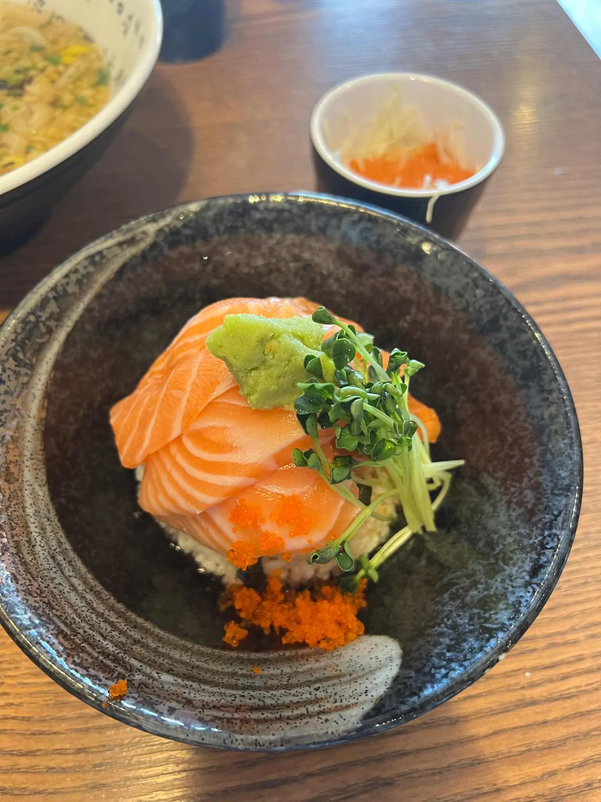
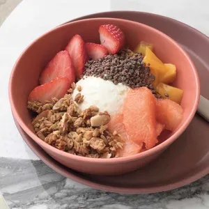

개요
덕성여자대학교는 서울 도봉구 삼양로 144길 33에 있습니다.
학교 주변 맛있는 곳들을 소개할게요!
맛집 목록 (from.다이닝코드)
hello! 음식점 소개.
학교 주변에 다양한 음식점들이 있습니다.
왼쪽의 맛집 리스트는 다이닝코드에서 덕성여대 맛집으로 검색한 210곳에서 뽑았습니다.
덕성여자대학교는 서울 도봉구 삼양로 144길 33에 있습니다.
학교 주변 맛있는 곳들을 소개할게요!
hello! 음식점 소개.
학교 주변에 다양한 음식점들이 있습니다.
| 대표이미지 | 상호 | 구분 | 평점 | 위치 |
|---|---|---|---|---|
 |
미성반점 | 짬뽕, 중국집 | 4.6 | 서울특별시 강북구 4.19로 37 1층 |
|  | 유키가후루 | 일본가정식, 사케동 | 4.0 | 서울특별시 강북구 한천로172가길 2 |
 |
춘천막국수 | 막국수, 녹두전 | 4.4 | 서울특별시 강북구 삼양로141길 4-4 춘천막국수 |
 |
히피스 베이글 | 베이글, 빵 | 4.7 | 서울특별시 강북구 삼양로528 1층 |
 |
붕자네 | 일식, 가츠동 | 5.0 | 서울특별시 강북구 우이동 71-35 |
|  | eeeyo 이요 | 그릭요거트 | 4.5 | 서울특별시 강북구 삼양로142길 33 1층 |